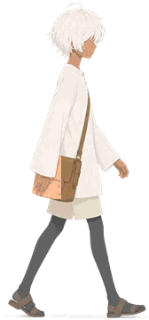
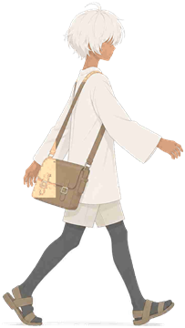

获得新道具，点击右上角的背包看看吧
不被定义的我
你可以拥有标签，但不必被标签定义
语言：中文 | Language：English
Ver 0.1.0
🔊 音量
🚪
👩👦
妈妈
⛰️
远方
🌲 森林入口 🌲
森林没有告诉你答案。
它只是让路出现在你面前。
它只是让路出现在你面前。
寻我之路｜第 1/3 道门


点击任意位置继续
归我之路｜第 1/3 段
抵达困境时，选择一个道具来面对
选择一个道具
命名之龙
勇敢
清醒
安稳
独立
善良
边界
命名之龙质问
道具已经不在背包里了。看看它们留下了什么。
0 / 3 已点亮
整理背包
山顶安静下来。背包不再华丽，慢慢变回妈妈最初给你的旧帆布包。
点击道具残影，把它们放回背包深处
0 / 3 已整理
点击继续对话 ▾